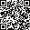

coucou,
moi c'est
Iris !
Vos yeux et vos lunettes expliqués en vidéos courtes, sur notre site et nos réseaux.

Nos vidéosIris est un personnage créé par intelligence artificielle · ses vidéos sont préparées par l'équipe Pigeard